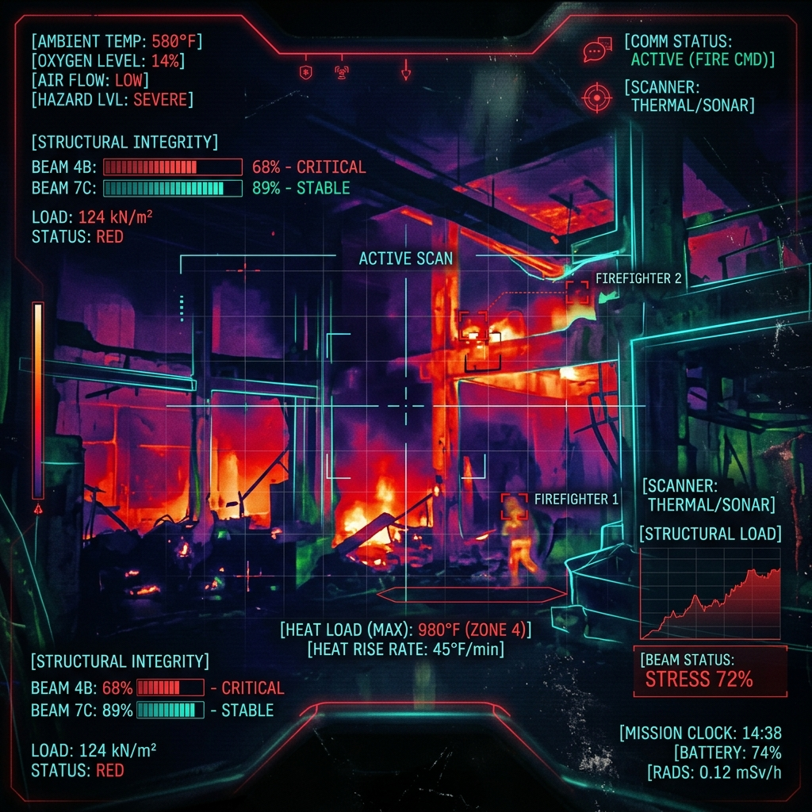

調查的核心本質
災害事故調查性質是「行政調查」，核心目標為探求真相以促進改善，確保第一線防救災人員之安全。
司法 / 究責式調查
(傳統思維)
⚖️
以追究個人罪責為目的
- 性質：強制調查 (具強制處分權)
- 目的：釐清起火原因與追究責任
- 結果：產生法律效果與處罰
VS
災害事故原因調查
(系統思維)
🔍
以探求真相與改善系統為目的
- 性質：任意調查 (需關係人自願配合)
- 目的：釐清消防人員致死/重傷原因
- 效果：無強制處分權，提出改善建議
- 價值：提升防救災安全
前線守護者
現場事故安全官
(Safety Officer)
在每一次高風險的搶救行動中，事故安全官是確保第一線救災人員生命安全的最後一道防線。他們獨立於一般的搶救任務之外，專注於現場的宏觀安全管控。
-
👁️
風險辨識與評估
持續監控建築結構、火載量、閃燃前兆或毒化洩漏，即時發出警告。
-
🛑
絕對中止權 (Emergency Stop)
當判定現場存在「立即且無法挽回的危險」時，有權直接中止行動並下令撤離。
-
📋
管制與科學紀錄
管控人員入室時間、氣瓶餘量。此紀錄也是日後「事故調查委員會」進行系統改善的重要證據。
安全官戰術監測系統 (點擊左側切換)

災害事故調查會組成
確保調查的專業性與客觀性，由各界菁英組成，並保障基層與專業主導 — 點擊卡片查看詳細說明
👥
機關代表
消防、營建、毒化物等相關機關。
政府機關 ▼ 點擊展開
🎓
專家學者
消防、刑事、鑑識、電力、建築、結構、法律等多領域專家。
專業主導 ▼ 點擊展開
🚒
基層消防團體
保障第一線人員發聲，與專家學者合計席次需過半數。
基層聲音 ▼ 點擊展開
⚖️
核心原則
委員 13-17 人，任一性別不少於 1/3，共識決議。
制衡機制 ▼ 點擊展開中央與地方調查權責流程
明確劃分權責，偕同現場勘查與關係人訪談，尊重關係人身心狀況
中央災害事故調查會 (內政部)
負責消防署及所屬機構人員之事故調查，或掌握地方辦理進度。
- 掌握地方辦局進度與時序
- 決議事項提供地方辦理
- 發布報告及查核備查
地方災害事故調查會 (各縣市政府)
負責縣市消防局所屬人員之事故調查。
- 工作小組彙整時序、影像紀錄
- 偕同專家進行勘查與關係人訪談
- 撰寫初步與基本報告呈報中央
⚠️ 訪談作業守則
必須取得受訪談對象同意，考量並尊重其身心狀況，避免再度造成心理創傷 (二次傷害) 並維護關係人信任。
專屬法規與培訓教材
掌握最新法令架構與現場防護知識，作為安全官與調查委員的核心智庫。
借鏡國際：系統性思維分析
以日本大阪道頓堀火災事故及國內新店粗坑壩救援案為例
日本調查的方向與重點
非究責式的系統分析，關注「發生什麼(What)」與「如何發生(How)」，絕不歸咎於個人判斷 (Who)。
- 火災模擬 (FDS)： 分析延燒路徑與建築構造弱點
- 三個複合因子： 陷入危機因素、無法脫困因素、救援耗時因素
- 嚴謹查證： 證據等級精確劃分 (認定、推定、可能...)
- 防止再發生： 推展「自救訓練」與建築管理強化
情境重建模擬
地方與中央後續強化措施
從水域救援事故中學習，啟動各項中長期精進計畫。
- 盤點與演練： 30日內完成高風險水域盤點並進行救援演練
- 訓練營： 中央與地方合辦「高風險場域救援整備訓練營」
- 警示標示： 強化警示標示法令，會同水利/觀光單位強化管理
- 持續追蹤： 中央調查會持續掌握地方辦理進度
檢討應變處置
安全，是所有救災工作的根本
災害事故調查目的不在追究個人罪責，
而是透過公正客觀的檢視，作為未來訓練、裝備與行動模式改善的墊腳石。